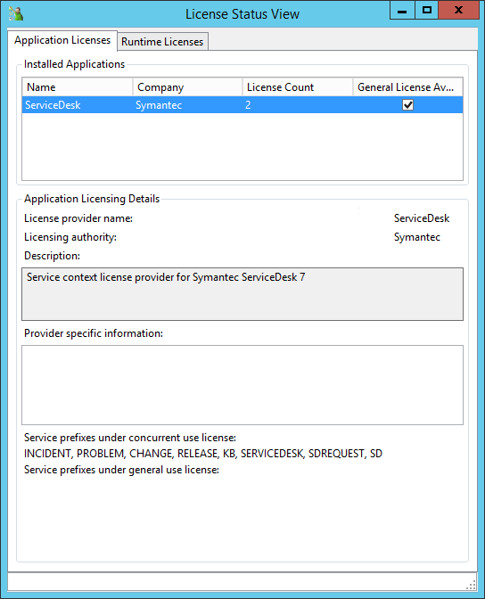
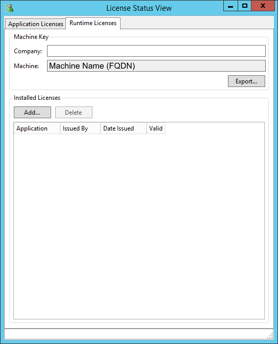
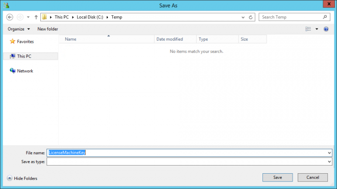

Table Of Contents
- Application Editor
- BusinessTimeSpan Editor
- Composer Theme Editor
- Credentials Manager
- License Status Manager
- LocalMachineInfo Editor
- Log Viewer
- Messaging Console
- Schedule Editor
- Screen Capture Util
- Server Extensions Configurator
- Task Tray Tool
- ToolPreferences Editor
- Workflow Explorer
Start > Programs > Symantec > Workflow Designer > Tools > License Status Manager
The License Status Manager lets you view licensing information about Workflow and Workflow-related applications (such as ServiceDesk). This tool also lets you run tests on your license to verify that it works properly. The tool does not create or manage licensing. The Symantec Management Platform manages all licensing. The tool communicates with the Symantec Management Platform to determine licensing information.
Chapter 34 - User Guide
Symantec Glossary
License Status Manager
[No Item Found]
Descriptionhttps://www.symantec.com/security_response/glossary/define.jsp
File Location
"[Install Drive]:\Program Files\Symantec\Workflow\Tools\Symantec.LicenseStatus.Editor.exe"
Info

You can Export the Machine Key but you need to add a Company before your click Export.

This allows you to choose a location to Export too.
Default file "LicenseMachineKey"

This uses "Symantec.Workflow.Licensing.MachineData" and RSA.
You can see some information if you open this in Notepad.
Add requires a ".symwflic" file type.
Help
About the License Status Manager
https://support.symantec.com/en_US/article.HOWTO62218.html
Errors
ServiceDesk 7.x Licensing Error Messages and Troubleshooting Ideas
https://support.symantec.com/en_US/article.HOWTO50304.html
Check the following SMP Service
- http://[SMPServername]/Altiris/ServiceDesk/licensing.asmx
Plugins
Workflow - Plugins - License Status
https://www.symantec.com/connect/articles/workflow-plugins-license-status